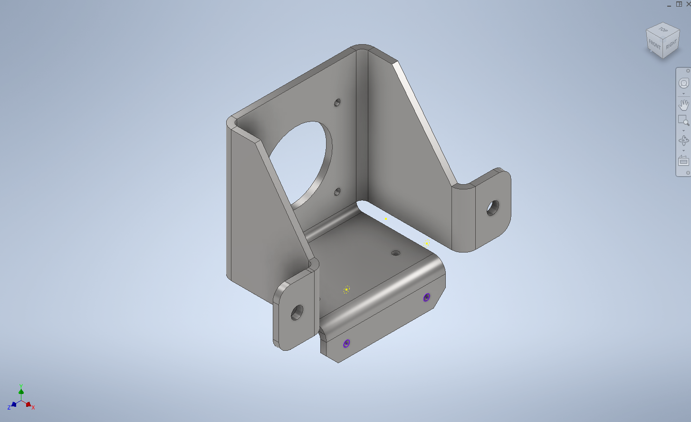
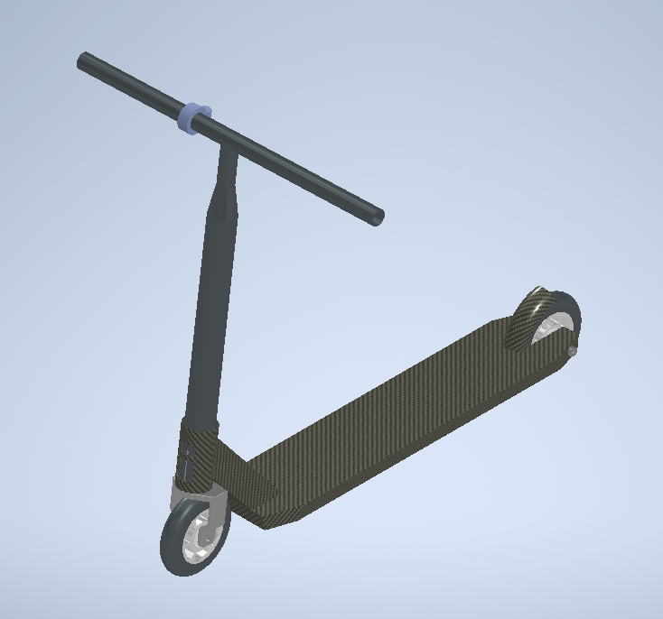
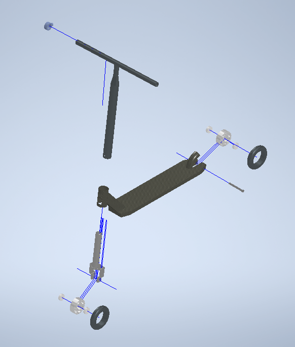
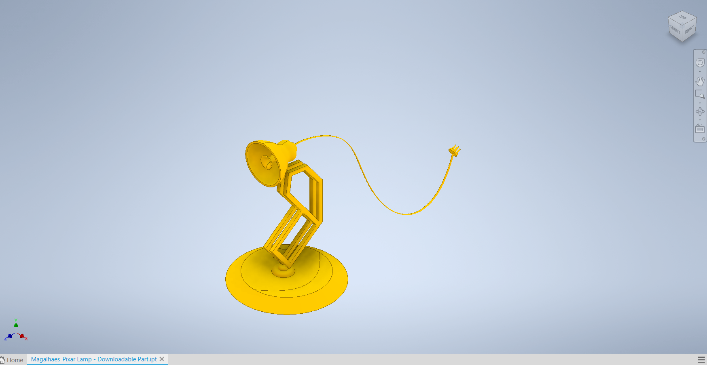
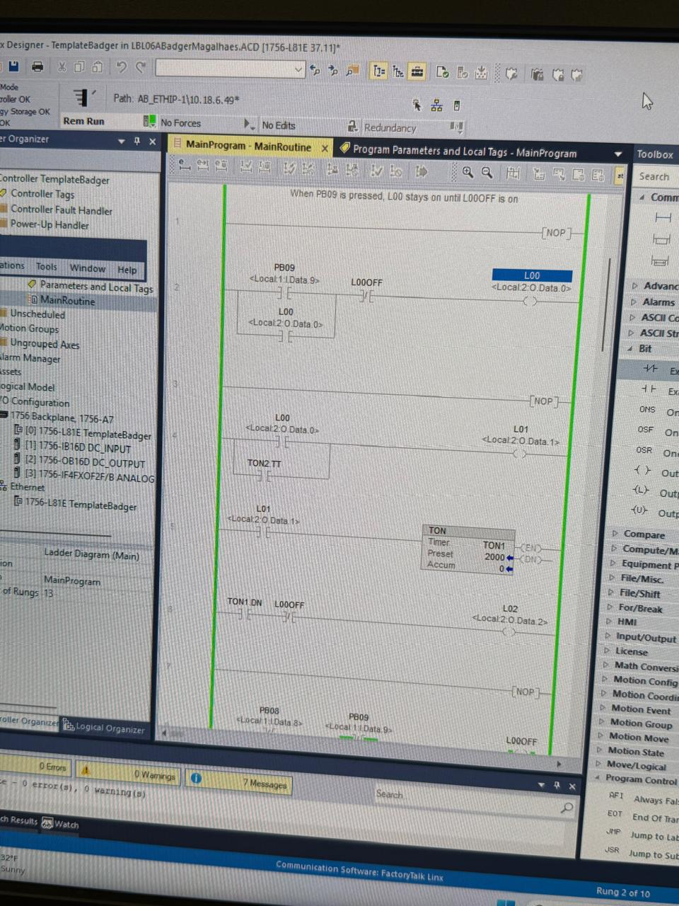
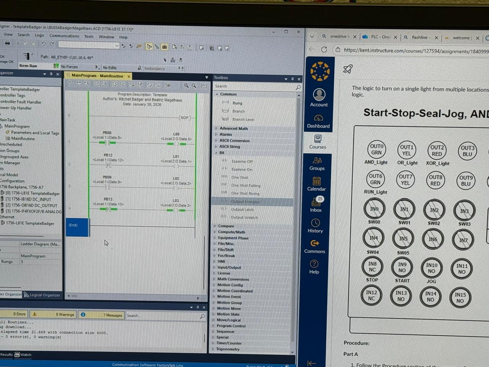
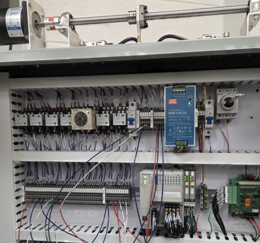
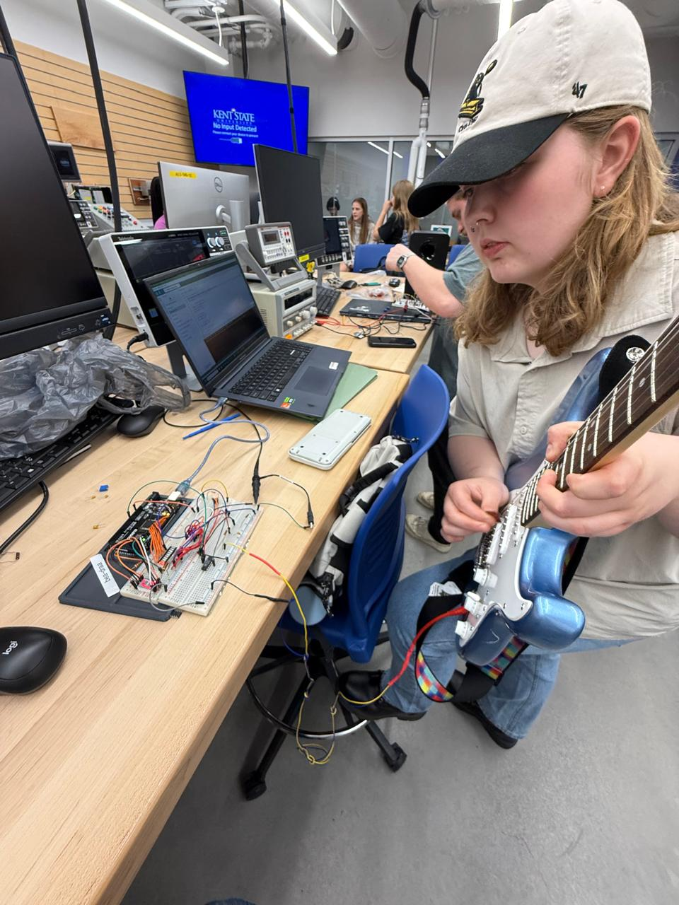
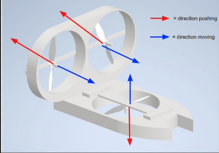

I am an international Brazilian Kent State Mechatronics Engineering student focused on combining mechanical systems, electronics, automation, and programming to build intelligent engineering projects. My interests include: Robotics, Embedded Systems, PLC programming, Automation, and Circuit Design.
Engineering Portfolio
CAD Projects
Software Used: Autodesk Inventor and SolidWorks
In these projects, multiple engineering designs were created and analyzed using Autodesk Inventor and SolidWorks to develop accurate mechanical systems, manufacturing drawings, and structural simulations based on real-world engineering requirements.
Scooter assembly and product design project
Machine frame design project
Cable and harness routing projects
Tube and pipe system design
Sheet metal modeling projects
Surfacing and frame generation projects
Finite Element Analysis (FEA) bridge simulation project
Developed complete 3D models, 2D sketches, assemblies, GD&T annotations, balloon lists, bills of materials, and detailed manufacturing documentation.
Performed Finite Element Analysis on a bridge structure using real loading conditions, gravity, and vehicle weight simulations.
Evaluated stress distribution, strain, deformation, and safety factors using FEA tools and Von Mises stress analysis.
Project Images:
Bracket made in Inventor using Sheet Metal Feature

Machine Design Project using frame, cable and harness, and tube and pipe featuresScooter product made in Inventor – exploded view

Scooter product made in Inventor – isometric view

Pixar Lamp made using surfacing technique

Programmable Logic Controllers
Industrial automation labs were completed using NEMA panels, lightboxes, and PLC programming using Studio 5000.
Ladder logic, SFC, and structured text were used to design automated control systems.
Challenges included learning new systems quickly and troubleshooting industrial automation problems.
Skills gained include PLC programming, wiring, troubleshooting, and automation design.
Timers for motor lubrication pump project (PLC ladder logic)

Basic ladder logic programming exercises from PLC lab

NEMA panel being configured for use in laboratory

Guitar Tuner Project
Electronic guitar tuner designed using LM324 op-amp, Arduino MEGA, and frequency detection systems.
Analog signal processing using RC filters
Zero-crossing detection for frequency analysis
7-segment LED display output
Oscilloscope and multimeter testing
Challenges included filtering harmonics and stabilizing signal detection.
Solution involved changing amplifier configuration and adding software hysteresis.
Troubleshooting and testing of guitar tuner frequency accuracyTroubleshooting and testing of guitar tuner frequency accuracy

Hovercraft Project
Designed and built a hovercraft to complete obstacle navigation tasks under strict weight and cost constraints.
Foam base structure and balsa wood frame
Three-propeller system design
CAD modeling and structural planning
Gantt chart and team planning
Challenges included stability, weight distribution, and propulsion control.
Solutions involved design iteration and testing.
Image of Decision Matrix made in ExcelCAD model of Hovercraft designed in Inventor (latest design)

Gantt Chart made in Excel for project planningFinal drawing made on paper with final colour scheme